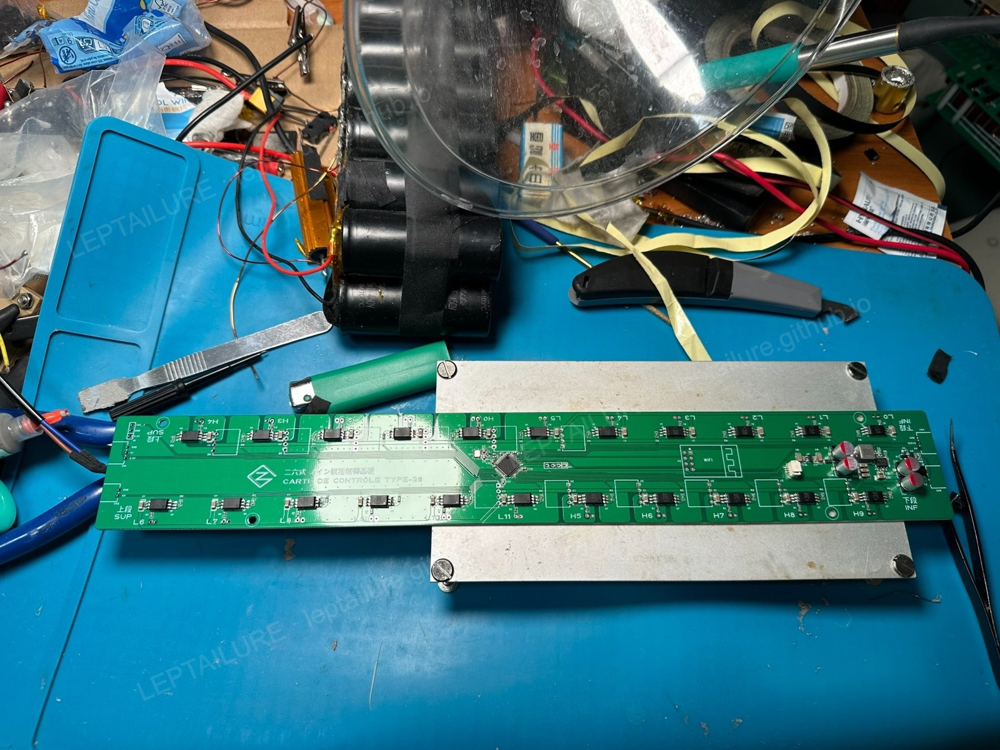

Électronique &
expérimentation.
Étudiant en électronique, je conçois et réalise des projets associant simulation numérique, systèmes embarqués et travail sur le banc.
Projets

Système électromagnétique à réluctance
Simulation numérique, électronique de puissance, commande embarquée et expérimentation.
Compteur de pulsations cardiaques
Une chaîne de mesure, du capteur optique à l’affichage numérique.
Détecteur de flux d’air
Détection du sens d’un flux et extension personnelle sur microcontrôleur.
Détection de chute sur FPGA
Traitement des données d’un accéléromètre par une architecture logique.